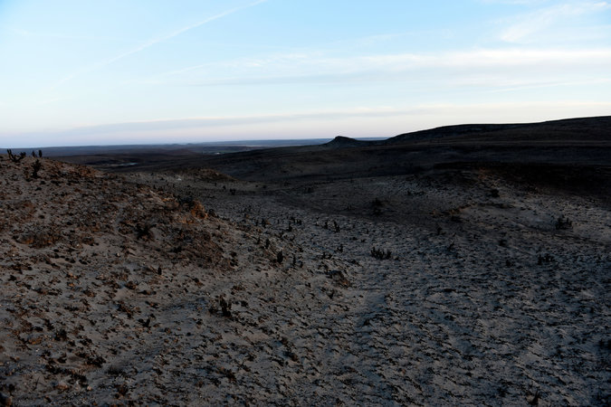
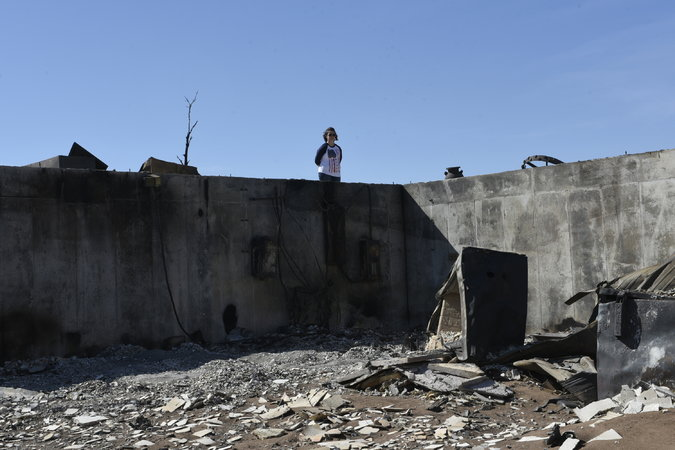

Ranchers in Kansas, Oklahoma and Texas are trying to recover after wildfires ravaged their herds and their land. By SUSAN JOAN ARCHER and JACK HEALY on Publish Date March 20, 2017. Photo by Nick Oxford for The New York Times.
ASHLAND, Kan. — Death comes with raising cattle: coyotes, blizzards and the inevitable trip to the slaughterhouse and dinner plate. But after 30 years of ranching, Mark and Mary Kaltenbach were not ready for what met them after a wildfire charred their land and more than one million acres of rain-starved range this month.
Dozens of their Angus cows lay dead on the blackened ground, hooves jutting in the air. Others staggered around like broken toys, unable to see or breathe, their black fur and dark eyes burned, plastic identification tags melted to their ears. Young calves lay dying.
Ranching families across this countryside are now facing an existential threat to a way of life that has sustained them since homesteading days: years of cleanup and crippling losses after wind-driven wildfires across Kansas, Oklahoma and the Texas panhandle killed seven people and devoured homes, miles of fences and as much as 80 percent of some families’ cattle herds.
But for many, the first job after the fire passed was loading a rifle.
“We did what had to be done,” Mr. Kaltenbach, 69, said. “They’re gentle. They know us. We know them. You just thought, ‘Wow, I am sorry.’”
“You think you’re done,” he said, “and the next day you got to go shoot more.”
For decades and generations, ranching has defined people’s days. Mr. Kaltenbach would wake up at 4:30 a.m. without an alarm clock. Another family down the road, the Wilsons, checked on the cows between jobs at the hospital and the telephone company. The Wilsons invited their whole family over each spring to round up the calves, vaccinate and tag them.
Beyond the toll of the fire, a frustration also crops up in conversation after conversation. Ranchers said they felt overlooked amid the tumult in Washington, and were underwhelmed by the response of a new president who had won their support in part by promising to champion America’s “forgotten men and women.”
“This is the country that elected Donald Trump,” said Garth Gardiner, driving a pickup across the 48,000-acre Angus beef ranch he runs with his two brothers. They lost about 500 cows in the fires. “I think he’d be doing himself a favor to come out and visit us.”

Dawn over the charred landscape in the hills outside Ashland, where wildfires destroyed vast stretches of ranch land. Credit Nick Oxford for The New York Times
Mr. Gardiner voted for Mr. Trump, and said he just wanted to hear a presidential mention of the fires amid Mr. Trump’s tweets about the rapper Snoop Dogg, the East Coast blizzard and the rudeness of the press corps.
“Two sentences would go a long way,” Mr. Gardiner said.
Weeks without snow or rain and late-winter temperatures scraping the 80 degrees are threatening to create even more blazes in Western states grappling with the growing fire dangers posed by climate change. On Sunday, about 1,000 homes in Boulder, Colo., were evacuated by a wildfire in the dry hills that was burning out of control across 100 acres.
The Kansas fires — the largest in state history — burned more than 400,000 acres here in Clark County alone. Ten days later, Mr. Gardiner was still burying cows on his family’s ranch. One by one, an orange loader scooped them off the bare sandy soil and trundled them to a pit being dug by a backhoe.
Ranchers said the cattle they had lost were worth more than the $2,000 they could fetch at an auction. Each cow was an engine that drove their farms and finances, giving birth to new calves every year or producing embryos through artificial insemination that could be implanted into other cows.
Emergency programs run by the federal Department of Agriculture — which is facing 21 percent cuts under Mr. Trump’s budget proposal — will help ranchers, up to a point. One provides up to $200,000 per rancher for replacing burned fences. Another offers up to $125,000 for livestock losses.
At about $10,000 per mile, Mr. Gardiner said, new fencing alone may cost his ranch about $2 million. His total losses could reach $5 million to $10 million. Like many ranchers out here, he had insurance on his home and equipment, but said insuring so many livestock and so much fence was impossibly expensive.
“We’re not asking for freebies here,” he said. “We’re going to work our tails off to get this thing rebuilt. We’re going to get the blisters on our hands and roll up our sleeves and do the labor.
He added, “We could use a little help.”
Aaron Sawyers, an agriculture extension agent with Kansas State University, got so upset with the delays in and strings attached to getting relief, and what he called a lackluster response from Washington, that he wrote a Facebook post on Tuesday urging friends to barrage lawmakers to loosen up government money for ranchers to replace fences and rebuild their devastated herds.

Jenny Betschart looking over what remains of her house outside Ashland in the wildfires’ wake. Credit Nick Oxford for The New York Times
“This is our Hurricane Katrina,” Mr. Sawyers said. The political response to the fires convinced him that Washington, even with an administration supported by 83 percent of Clark County voters in the election, was still “out of touch and didn’t care about us.”
“None of them are worth a damn, Republicans or Democrats,” he said.
The governors of Texas, Oklahoma and Kansas have declared emergencies, and members of Congress from the affected states have toured the damaged area and promised help. In Kansas, Gov. Sam Brownback’s office said that officials were adding up losses to request a presidential disaster declaration.
But help did arrive. Thousands of donated hay bales, to feed surviving animals bereft of their grasslands, have been rolling into town on the backs of tractor-trailers. Firefighters arrived from Colorado to help contain and extinguish the blaze. Farming and ranching groups from across the Great Plains sent skeins of fence wire and new metal posts to drive three feet into the soil. Members of 4-H clubs and National FFA Organization chapters drove down to help with the cleanup, sleeping in guest bedrooms and on living-room floors around the towns of Ashland, Meade and Protection.
“We don’t like to receive,” said Kendal Kay, the mayor of Ashland and president of a community bank here. “It’s a time we’re realizing we need to receive.” Mary Kaltenbach, 57, said she was not a hugger, but had been embracing neighbors for much of the past week. “You just do it,” she said.
In all, the Kaltenbachs lost 130 cows and about 70 calves. About a dozen of their heifers — younger females — are now penned in just behind their house, which was spared, near the scorched foundations of two barns that did burn. One evening, the couple grabbed a bucket of feed pellets to check on them.Most romped to eat, but two smaller black cows hung back behind a gate, hobbling forward.
“Feet hurt,” Mrs. Kaltenbach said grimly of one. “She’s not going to work.”
About seven miles east, the house that Matt Wilson’s forebears built when they homesteaded in 1884 had withstood financial panics, droughts, the Dust Bowl and other fires, but it burned to ashes in the wildfires. His family also lost eight cows and calves, part of a small herd of about 100 that the family raises in addition to holding full-time jobs.
The newer house where the Wilsons and their six children lived also was destroyed. But they managed to save 1890s photographs of Mr. Wilson’s great-grandfather: standing in front of the original house, atop a horse on an empty plain, at a county rodeo. They are planning to rebuild and keep ranching.
By way of explanation, Mr. Wilson pointed to the photos: “They didn’t start with much.”